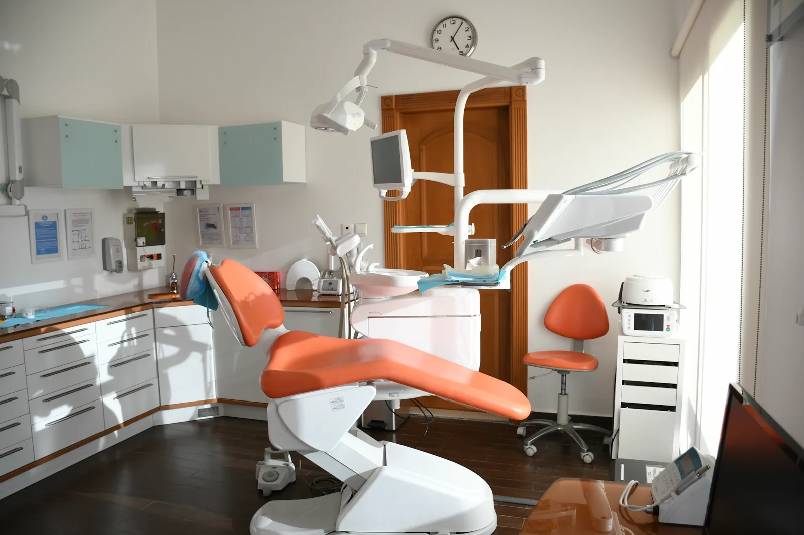
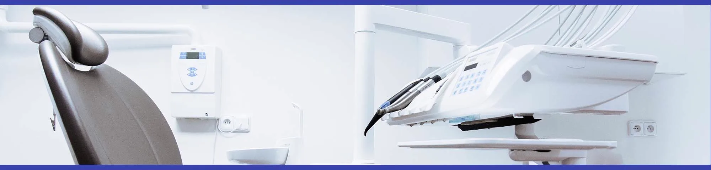
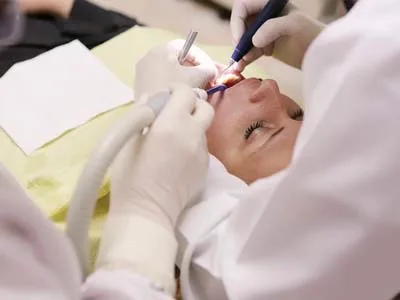
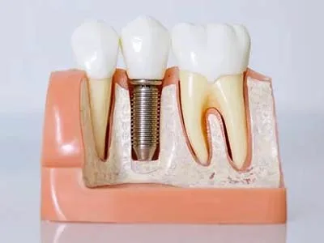
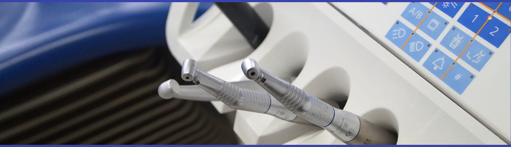

Llámanos
943 638 545Reserva tu cita por teléfono en nuestro horario de atención.

Reserva tu cita cómodamente. Nos encontrarás en San Pedro, 24, frente a la entrada del ambulatorio Dumboa, con amplia zona de aparcamiento.
Reserva tu cita por teléfono en nuestro horario de atención.
San Pedro, 24 bajo
20304 Irún (Gipuzkoa)
Sep–Jun y horario de verano (Jul–Ago). Consulta el detalle más abajo.
Un equipo cercano, honesto e implicado, que dedica a cada paciente el tiempo que necesita. Así lo cuentan quienes ya nos conocen.





Centro con Autorización Sanitaria nº 1620000776 y Código Autonómico 20 C.2.5.1. 4058, cumpliendo la normativa vigente en materia de salud.
Más de dos décadas y media cuidando la salud bucodental de las familias de Irún y la comarca del Bidasoa.
Frente a la entrada del ambulatorio Dumboa, con amplia zona de aparcamiento para que tu visita sea cómoda.
Reserva tu cita y te ayudaremos con el trato cercano y honesto que nos caracteriza.
943 638 545